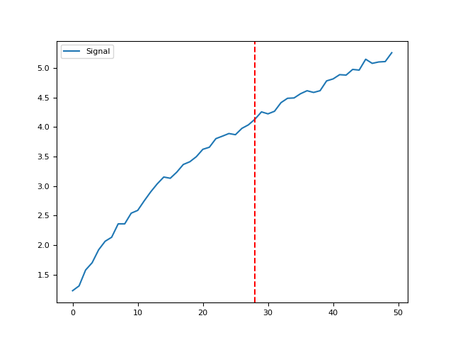

Misc
Contents
Misc#
check_type()#
- check_type(x, what='str')[source]#
Check type of input
Creates a list of boolean values to check if the input is of the target type.
- Parameters
x (int, list, pd.DataFrame, pd.Series, np.ndarray) – Target of checking
what (str) – Compare the dtype of target with what.
- Returns
array – An array of boolean values.
Examples
In [1]: import neurokit2 as nk In [2]: nk.check_type([1, 2, 3, "hello"], what="str") Out[2]: array([False, False, False, True]) In [3]: nk.check_type(pd.DataFrame({"A": [3, 1, 2, 4, 6, np.nan], ...: "B": [3, 1, 2, "hello", 6, 5]}), what="str") ...: Out[3]: array([False, True])
expspace()#
- expspace(start, stop, num=50, out=<class 'int'>, base=1)[source]#
Exponential range
Creates a list of integer values (by default) of a given length from start to stop, spread by an exponential function.
- Parameters
start (int) – Minimum range values.
stop (int) – Maximum range values.
num (int) – Number of samples to generate. Default is 50. Must be non-negative.
out (type) – Type of the returned values. Default is int.
base (float) – If 1, will use
np.exp(), if 2 will usenp.exp2().
- Returns
array – An array of integer values spread by the exponential function.
Examples
In [1]: import neurokit2 as nk In [2]: nk.expspace(start=4, stop=100, num=10) Out[2]: array([ 4, 6, 8, 12, 17, 24, 34, 49, 70, 100])
find_closest()#
- find_closest(closest_to, list_to_search_in, direction='both', strictly=False, return_index=False)[source]#
Find the closest number in the array from a given number x
- Parameters
closest_to (float) – The target number(s) to find the closest of.
list_to_search_in (list) – The list of values to look in.
direction (str) –
"both"for smaller or greater,"greater"for only greater numbers and"smaller"for the closest smaller.strictly (bool) –
Falsefor strictly superior or inferior orTruefor including equal.return_index (bool) – If
True, will return the index of the closest value in the list.
- Returns
closest (int) – The closest number in the array.
Example
In [1]: import neurokit2 as nk # Single number In [2]: x = nk.find_closest(1.8, [3, 5, 6, 1, 2]) In [3]: x Out[3]: 2 In [4]: y = nk.find_closest(1.8, [3, 5, 6, 1, 2], return_index=True) In [5]: y Out[5]: 4 # Vectorized version In [6]: x = nk.find_closest([1.8, 3.6], [3, 5, 6, 1, 2]) In [7]: x Out[7]: array([2, 3])
find_consecutive()#
- find_consecutive(x)[source]#
Find and group consecutive values in a list
- Parameters
x (list) – The list to look in.
- Returns
list – A list of tuples corresponding to groups containing all the consecutive numbers.
Examples
In [1]: import neurokit2 as nk In [2]: x = [2, 3, 4, 5, 12, 13, 14, 15, 16, 17, 20] In [3]: nk.find_consecutive(x) Out[3]: [(2, 3, 4, 5), (12, 13, 14, 15, 16, 17), (20,)]
find_groups()#
- find_groups(x)[source]#
Find and group repeating (identical) values in a list
- Parameters
x (list) – The list to look in.
- Returns
list – A list of tuples corresponding to groups containing all the consecutive numbers.
Examples
In [1]: import neurokit2 as nk In [2]: x = [2, 2, 2, 2, 1, 3, 3, 2, 2, 2, 1] In [3]: groups = nk.find_groups(x) In [4]: groups Out[4]: [[2, 2, 2, 2], [1], [3, 3], [2, 2, 2], [1]]
find_outliers()#
- find_outliers(data, exclude=0.05, side='both')[source]#
Identify outliers (abnormal values)
Extreme values identification.
- Parameters
data (list or ndarray) – Data array
exclude (int, float) – Proportion of extreme observation to be excluded.
side (str) – Can be
"both","left"or"right". Ifexclude=0.05andside="both", 2.5% of extreme observation of each side will be marked as outliers.
- Returns
outliers (ndarray) – A list of True/False with True being the outliers.
Example
In [1]: import neurokit2 as nk In [2]: outliers = nk.find_outliers([1, 2, 1, 5, 666, 4, 1 ,3, 5]) In [3]: outliers Out[3]: array([False, False, False, False, True, False, False, False, False])
find_plateau()#
- find_plateau(values, show=True)[source]#
Find the point of plateau in an array of values
- Parameters
values (ndarray) – An array of values.
show (bool) – If
True, will return the plot visualizing the trajectory and point of plateau.
- Returns
plateau (int) – The index of the plateau.
Example
In [1]: import neurokit2 as nk # Generate values manually In [2]: x = np.linspace(1, 5, 50) In [3]: y = 2.5 * np.log(1.3 * x) + 0.5 In [4]: y = y + 0.05 * np.random.normal(size=len(x)) # Find plateau In [5]: plateau = nk.find_plateau(y, show=True) In [6]: plateau Out[6]: 23
{kind=link}
intervals_to_peaks()#
- intervals_to_peaks(intervals)[source]#
Convenience function to convert intervals to peaks, such as from R-R intervals to R-peaks of an ECG signal.
This can be useful if you do not have raw peak indices and have only interval data such as breath-to-breath (BBI) or rpeak-to-rpeak (RRI) intervals.
- Parameters
intervals (list or array) – List or numpy array of intervals.
- Returns
array – An array of integer values indicating the peak indices, with the first peak occurring at sample point 0.
Examples
In [1]: import neurokit2 as nk In [2]: ibi = [500, 400, 700, 500, 300, 800, 500] In [3]: peaks = nk.intervals_to_peaks(ibi) In [4]: hrv_indices = nk.hrv_time(peaks, sampling_rate=100, show=True) In [5]: hrv_indices Out[5]: HRV_MeanNN HRV_SDNN HRV_SDANN1 ... HRV_MaxNN HRV_HTI HRV_TINN 0 5285.714286 1704.336206 NaN ... 8000.0 2.333333 2000.0 [1 rows x 24 columns]

listify()#
parallel_run()#
- parallel_run(function, arguments_list, n_jobs=- 2, **kwargs)[source]#
Parallel processing utility function (requires the
`joblibpackage)- Parameters
function (function) – A callable function.
arguments_list (list) – A list of dictionaries. The function will iterate through this list and pass each dictionary inside as
**kwargsto the main function.n_jobs (int) – Number of cores to use.
-2means all but 1. Seejoblib.Parallel().**kwargs – Other arguments that can be passed to
joblib.Parallel().
- Returns
list – A list of outputs.
Examples
In [1]: import neurokit2 as nk In [2]: import time # The function simply returns the input (but waits 3 seconds.) In [3]: def my_function(x): ...: time.sleep(3) ...: return x ...: In [4]: arguments_list = [{"x": 1}, {"x": 2}, {"x": 3}] In [5]: nk.parallel_run(my_function, arguments_list) Out[5]: [1, 2, 3]
replace()#
- replace(data, replacement_dict)[source]#
Replace values using a dictionary
- Parameters
data (array) – The data to replace values.
replacement_dict (dict) – A replacement dictionary of the form
{old_value: new_value}.
- Returns
array – Array containing the replaced values.
Examples
import neurokit2 as nk
data = [0, 1, 2, 3] replacement = {0: 99, 3: 42} replaced = nk.replace(data, replacement) replaced
as_vector()#
- as_vector(x)[source]#
Convert to vector
Examples
import neurokit2 as nk
x = nk.as_vector(x=range(3)) y = nk.as_vector(x=[0, 1, 2]) z = nk.as_vector(x=np.array([0, 1, 2])) z
x = nk.as_vector(x=0) x
x = nk.as_vector(x=pd.Series([0, 1, 2])) y = nk.as_vector(x=pd.DataFrame([0, 1, 2])) y
Any function appearing below this point is not explicitly part of the documentation and should be added. Please open an issue if there is one.
Submodule for NeuroKit.